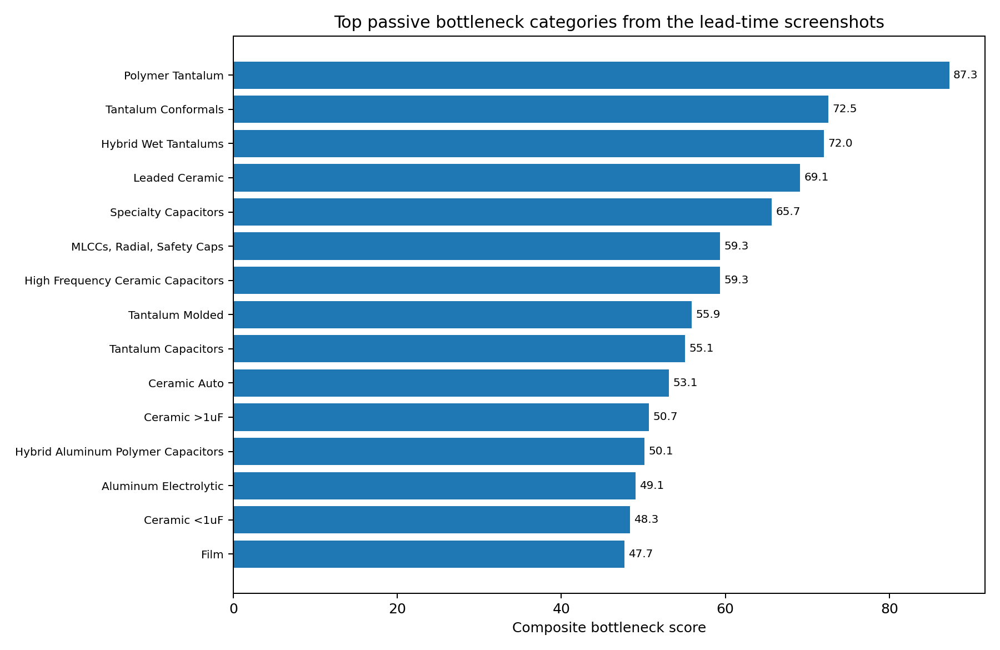
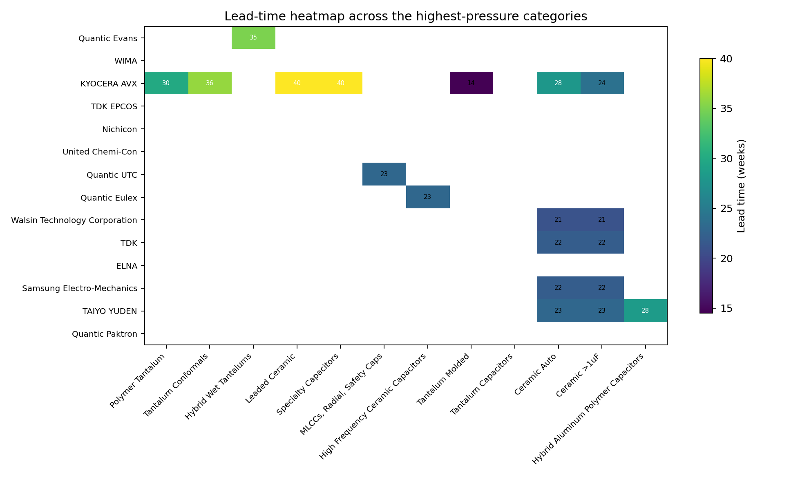
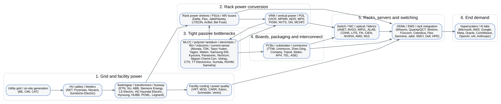
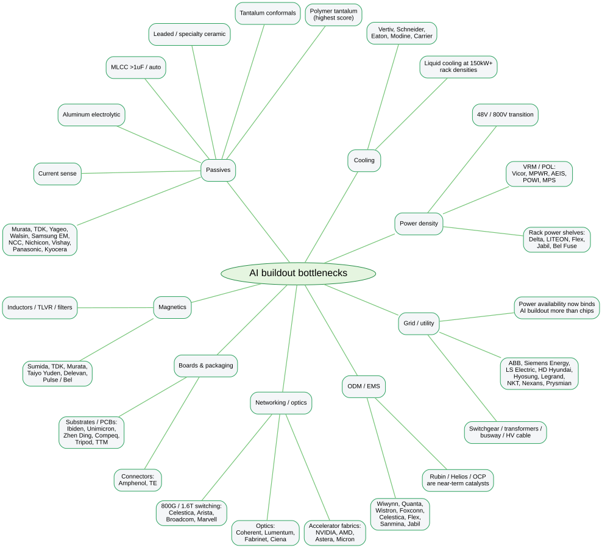
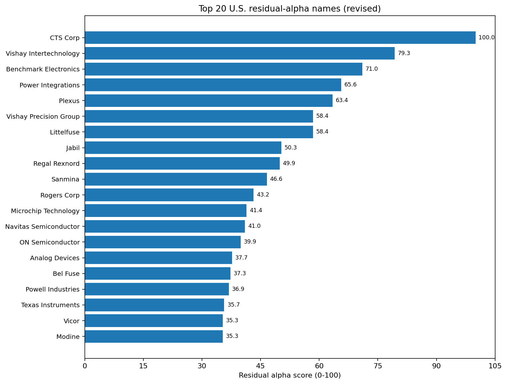
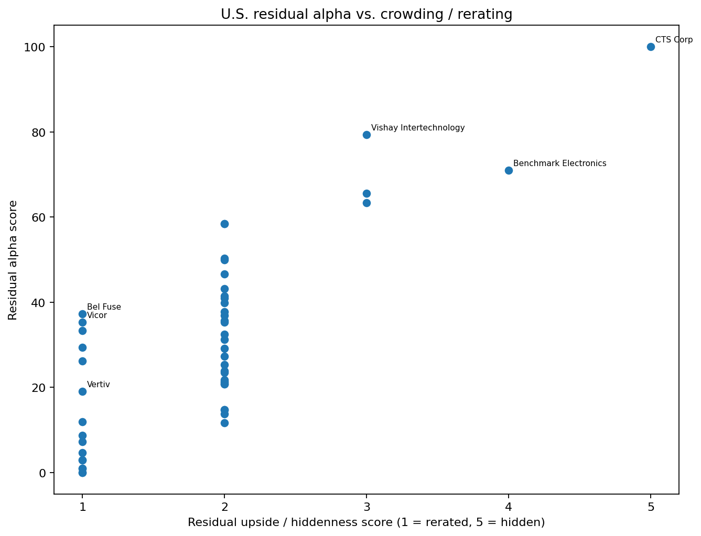
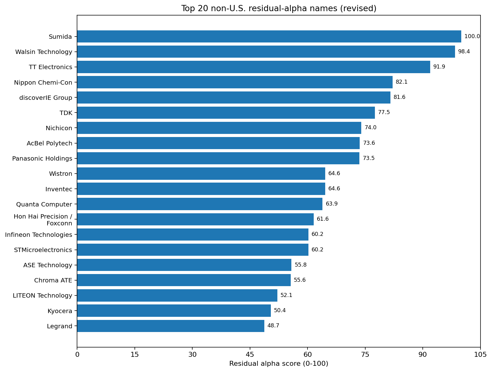
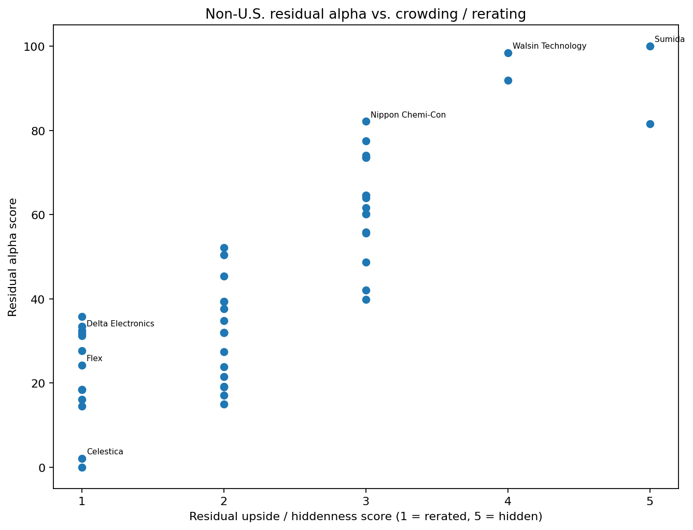
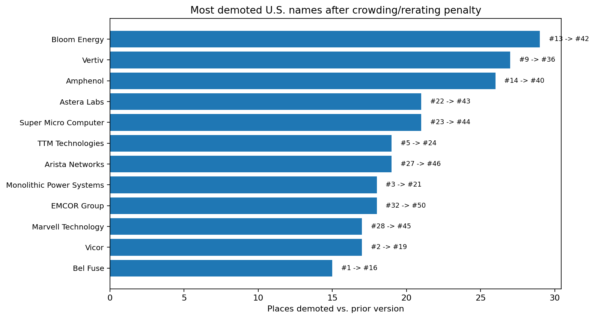
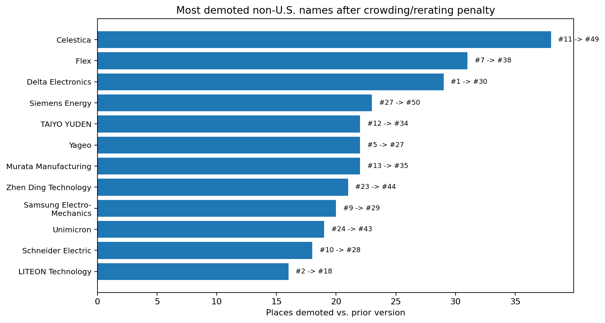

What changed
Bel Fuse and Delta Electronics should not have been ranked #1. They are strategically important, but under your definition of alpha they are no longer hidden gems. This revision adds a rerating / crowding penalty and a bottleneck-closeness filter, which pushes already-rerated winners down and lifts underfollowed passive and power names.
#16
Bel Fuse revised U.S. rank (was #1)
#30
Delta Electronics revised non-U.S. rank (was #1)
#36
Vertiv revised U.S. rank (was #9)
#49
Celestica revised non-U.S. rank (was #11)
Correction table
| Company | Prior rank | Revised rank | Residual alpha score | Why moved down |
|---|---|---|---|---|
| Bel Fuse | 1 | 16 | 37.3 | Directly relevant, but already rerated. |
| Delta Electronics | 1 | 30 | 32.5 | Core power winner, but no longer hidden. |
| Vertiv | 9 | 36 | 19.1 | Strategic winner, but crowded. |
| Celestica | 11 | 49 | 2.1 | Already recognized by market; low residual alpha. |
| Flex | 7 | 38 | 24.2 | Important infrastructure player, but rerated. |
Residual-alpha methodology
Step 1: Bottleneck severity
From your lead-time screenshots: longest lead times, most pricing-up arrows, and categories where shortages cluster.
From your lead-time screenshots: longest lead times, most pricing-up arrows, and categories where shortages cluster.
Step 2: AI stack closeness
Passives, current sensing, magnetics, PSU, IBC, VRM and rack-power names receive more weight than broad infrastructure or downstream beneficiaries.
Passives, current sensing, magnetics, PSU, IBC, VRM and rack-power names receive more weight than broad infrastructure or downstream beneficiaries.
Step 3: Hiddenness / residual upside
Stocks already rerated hard are penalized, even if they remain strategically important. This is the key fix.
Stocks already rerated hard are penalized, even if they remain strategically important. This is the key fix.
Residual alpha formula: bottleneck severity + centrality + catalyst + AI relevance + bottleneck closeness + hiddenness/focus bonus minus crowding and rerating penalty.
Where the tightest passive bottlenecks sit
Capacitors - Polymer Tantalum
40.0w
Average lead time • Pricing-up rate 100%
Capacitors - Tantalum Conformals
35.5w
Average lead time • Pricing-up rate 100%
Hybrid Wet Tantalums
35.0w
Average lead time • Pricing-up rate 100%
Leaded Capacitors - Ceramic
32.2w
Average lead time • Pricing-up rate 100%
Specialty Capacitors
29.0w
Average lead time • Pricing-up rate 100%
Hybrid Aluminum Polymer Capacitors
28.5w
Average lead time • Pricing-up rate 0%
Bottleneck categories from the screenshot set
| category | vendors | avg_lt_weeks | max_lt_weeks | trend_up_rate | pricing_up_rate |
|---|---|---|---|---|---|
| Capacitors - Polymer Tantalum | 3 | 40.0 | 54.0 | 100% | 100% |
| Capacitors - Tantalum Conformals | 2 | 35.5 | 40.0 | 100% | 100% |
| Hybrid Wet Tantalums | 1 | 35.0 | 40.0 | 100% | 100% |
| Leaded Capacitors - Ceramic | 4 | 32.2 | 40.0 | 100% | 100% |
| Specialty Capacitors | 3 | 29.0 | 40.0 | 100% | 100% |
| Hybrid Aluminum Polymer Capacitors | 1 | 28.5 | 33.0 | 100% | 0% |
| Surface Mount General Capacitors | 1 | 25.0 | 26.0 | 0% | 0% |
| High Frequency Ceramic Capacitors | 1 | 23.0 | 26.0 | 100% | 100% |
| MLCCs, Radial, Safety Caps | 1 | 23.0 | 26.0 | 100% | 100% |
| Surface Mount General Capacitors – Ceramic *Automotive grade | 9 | 21.3 | 28.0 | 100% | 56% |
| Aluminum Electrolytic | 6 | 21.2 | 40.0 | 50% | 100% |
| Resistor Networks | 3 | 20.8 | 28.0 | 0% | 33% |


Microscope view: where the bottleneck sits in the stack
| Layer | What bottlenecks here | Representative suppliers / proxies |
|---|---|---|
| Utility / grid / substations | Switchgear, transformers, busway, power quality | Eaton, Schneider Electric, Vertiv, Powell, Hubbell, Legrand, ABB, Siemens Energy |
| Rack power entry | Power shelves, PSUs, rectification, ORV3 / high-voltage DC | LITEON, Delta, AcBel, Murata, Bel Fuse, Flex, Foxconn, Quanta, Wistron |
| Board-level conversion | 48V bus, IBC, VRM, point-of-load | Vicor, Monolithic Power Systems, Power Integrations, Microchip, Infineon, STMicro, Analog Devices, TI |
| Direct passive bottlenecks | MLCCs, polymer aluminum caps, polymer tantalum, tantalum conformals, film, shunt/current-sense, inductors | TDK, Murata, Samsung Electro-Mechanics, Walsin, Vishay, Yageo, Nichicon, Nippon Chemi-Con, Panasonic, Sumida, Taiyo Yuden, Kyocera |
| Board / package / integration | PCBs, backplanes, substrates, ODM/EMS | TTM, Sanmina, Plexus, Benchmark, Unimicron, Ibiden, ASE, Quanta, Inventec, Wistron, Hon Hai |
| System deployment | AI racks, liquid cooling, server deployment, hyperscale buildout | NVIDIA ecosystem, Jabil, Schneider, Eaton, Vertiv, Wiwynn, QCT, cloud operators |


Revised top 10 U.S. names
{kind=link}
| rank_revised | company | ticker | layer | residual_alpha_score | alpha_revision_note |
|---|---|---|---|---|---|
| 1 | CTS Corp | CTS | Passives / sensing | 100.0 | Direct passive/power bottleneck supplier with lower crowding and better residual upside. |
| 2 | Vishay Intertechnology | VSH | Passives | 79.3 | Direct bottleneck exposure remains attractive, though less hidden than Tier A names. |
| 3 | Benchmark Electronics | BHE | EMS / industrial electronics | 71.0 | Underfollowed integration/power proxy with more room left than headline AI winners. |
| 4 | Power Integrations | POWI | Power semis | 65.6 | Direct bottleneck exposure remains attractive, though less hidden than Tier A names. |
| 5 | Plexus | PLXS | EMS | 63.4 | Balanced AI supply-chain exposure, but not as mispriced as the top residual-alpha names. |
| 6 | Vishay Precision Group | VPG | Current sensing | 58.4 | Strategically important, but the stock already rerated; no longer top residual alpha. |
| 7 | Littelfuse | LFUS | Protection / sensing | 58.4 | Strategically important, but the stock already rerated; no longer top residual alpha. |
| 8 | Jabil | JBL | Power / cooling / EMS | 50.3 | Strategically important, but the stock already rerated; no longer top residual alpha. |
| 9 | Regal Rexnord | RRX | Magnetics / industrial | 49.9 | Balanced AI supply-chain exposure, but not as mispriced as the top residual-alpha names. |
| 10 | Sanmina | SANM | EMS / integration | 46.6 | Strategically important, but the stock already rerated; no longer top residual alpha. |


Revised top 10 non-U.S. names
{kind=link}
| rank_revised | company | ticker | layer | residual_alpha_score | alpha_revision_note |
|---|---|---|---|---|---|
| 1 | Sumida | 6817 | Inductors | 100.0 | Direct passive/power bottleneck supplier with lower crowding and better residual upside. |
| 2 | Walsin Technology | 2492 | Passives | 98.4 | Direct passive/power bottleneck supplier with lower crowding and better residual upside. |
| 3 | TT Electronics | TTG | Passives / sensing | 91.9 | Direct passive/power bottleneck supplier with lower crowding and better residual upside. |
| 4 | Nippon Chemi-Con | 6997 | Passives | 82.1 | Direct bottleneck exposure remains attractive, though less hidden than Tier A names. |
| 5 | discoverIE Group | DSCV | Power / connectivity | 81.6 | Direct passive/power bottleneck supplier with lower crowding and better residual upside. |
| 6 | TDK | 6762 | Passives | 77.5 | Direct bottleneck exposure remains attractive, though less hidden than Tier A names. |
| 7 | Nichicon | 6996 | Passives | 74.0 | Direct bottleneck exposure remains attractive, though less hidden than Tier A names. |
| 8 | AcBel Polytech | 6282 | Power supplies | 73.6 | Direct bottleneck exposure remains attractive, though less hidden than Tier A names. |
| 9 | Panasonic Holdings | 6752 | Passives | 73.5 | Direct bottleneck exposure remains attractive, though less hidden than Tier A names. |
| 10 | Wistron | 3231 | ODM / infrastructure | 64.6 | Balanced AI supply-chain exposure, but not as mispriced as the top residual-alpha names. |


Most demoted names after adding the rerating penalty


Who is supplying whom
This table follows the power path from grid, rack and shelf power down to board-level passives, then back up into ODMs and hyperscaler deployment.
| supplier | component_or_service | recipient | relationship_type | note |
|---|---|---|---|---|
| Eaton | Beam Rubin DSX power platform | NVIDIA Rubin DSX AI Factory | Named collaboration | Grid-to-chip power path |
| Schneider Electric | AI factory power/cooling blueprint | NVIDIA Rubin AI factories | Named collaboration | Validated with NVIDIA |
| Vertiv | Power and cooling infrastructure | AI factories / high-density data centers | Ecosystem supply | Named as NVIDIA ecosystem partner |
| Flex | 800VDC Power Rack | NVIDIA Vera Rubin infrastructure | Named product-platform fit | Megawatt-scale rack power |
| Celestica | Scale-up networking switches | AMD Helios rack-scale AI platform | Named collaboration | Helios rack-scale AI |
| Wiwynn | Rubin NVL72 AI factory infrastructure | NVIDIA platform | Named product-platform fit | Direct Rubin infrastructure demo |
| Foxconn | Full-system AI server racks | NVIDIA Vera Rubin NVL72 | Named product-platform fit | Modular data-center angle |
| LITEON | 110kW power shelf | QCT Rubin NVL72 AI server solution | Named collaboration | Shown jointly at GTC 2026 |
| Delta Electronics | ORV3 power shelves / PSUs | AI servers | Application-targeted | 5.5kW+ PSUs and 33kW shelves |
| Bel Fuse | Power supplies, connectivity, magnetics | AI/cloud servers | Application-targeted | High-density AI/cloud/edge architectures |
| Vicor | 48V point-of-load modules | AI accelerator clusters | Application-targeted | Current density near processors |
| Monolithic Power Systems | High-current power modules | AI accelerator cards | Application-targeted | 800A+ scalable current |
| TDK | TLVR inductors | Server power supply circuits | Application-targeted | AI-server power topology pages |
| TDK | MLCCs | AI server power systems | Application-targeted | AI-server power systems |
| Murata | MLCCs, inductors, filters | AI server/data-center power networks | Application-targeted | Power stabilization |
| Samsung Electro-Mechanics | High-capacitance MLCCs | AI server power modules | Application-targeted | AI-server power module stabilization |
| Yageo | Four-terminal shunt resistors | AI server PDUs | Application-targeted | PDU current-sense |
| Yageo | KO-CAP, MLCC, thin-film resistors, inductors | AI/server systems | Application-targeted | Broad AI passive portfolio |
| Nippon Chemi-Con | Conductive polymer aluminum caps | GPU/CPU-adjacent VRM | Application-targeted | Ultra-low ESR around processors |
| Nippon Chemi-Con | Immersion-compatible capacitors | Liquid-cooled servers | Application-targeted | Immersion cooling compatibility |
| Panasonic Industry | POSCAP / polymer caps | Server and data-center power circuits | Application-targeted | Server power circuits |
| KYOCERA AVX | MLCCs | AI servers and GenAI systems | Demand exposure | AI-driven demand |
| Jabil | Hanley Energy power-management stack | AI data centers | Named acquisition thesis | Grid-to-rack power |
| Eaton / Schneider / Vertiv | Facility power and cooling | NVIDIA AI factories | Ecosystem supply | Reference-design ecosystem |
| NVIDIA Rubin | Rubin rack-scale systems | Microsoft / AWS / Google / OCI / CoreWeave | Named downstream adopters | Cloud demand map |
| NVIDIA Rubin | Rubin servers | Dell / HPE / Lenovo / Supermicro | Named downstream adopters | OEM demand map |
| Hyperscaler capex surge | Multi-year AI capacity expansion | Power/cooling/passive supply chain | Demand signal | Capex quadrupled since GPT-4 |
| Alphabet / Amazon / Microsoft capex surge | AI demand exceeded available supply | Upstream suppliers | Demand signal | Supply exceeded demand |
Most constrained screenshot vendors
These names come directly from your screenshot set and are ranked by internal vendor constraint score derived from lead time, pricing pressure and trend arrows. Private names remain useful as bottleneck indicators even when they are not directly investable.
| vendor | categories | avg_vendor_score | avg_lt_weeks | pricing_up_rate | trend_up_rate |
|---|---|---|---|---|---|
| Quantic Evans | 1 | 72.0 | 35.0 | 100% | 100% |
| WIMA | 1 | 67.2 | 21.0 | 100% | 100% |
| KYOCERA AVX | 9 | 65.1 | 27.9 | 89% | 89% |
| TDK EPCOS | 2 | 62.8 | 26.2 | 100% | 100% |
| Nichicon | 1 | 62.5 | 26.0 | 100% | 100% |
| United Chemi-Con | 1 | 59.3 | 23.0 | 100% | 100% |
| Quantic UTC | 1 | 59.3 | 23.0 | 100% | 100% |
| Quantic Eulex | 1 | 59.3 | 23.0 | 100% | 100% |
| Walsin Technology Corporation | 3 | 56.2 | 20.0 | 100% | 100% |
| TDK | 5 | 52.4 | 20.2 | 100% | 80% |
| ELNA | 1 | 51.4 | 25.0 | 100% | 0% |
| Samsung Electro-Mechanics | 5 | 51.0 | 31.2 | 40% | 60% |
| TAIYO YUDEN | 6 | 50.8 | 20.5 | 83% | 83% |
| Quantic Paktron | 1 | 49.8 | 14.0 | 100% | 100% |
| Vishay | 14 | 47.4 | 21.1 | 86% | 57% |
| Murata | 7 | 41.6 | 19.7 | 43% | 71% |
| Panasonic Industry | 7 | 39.5 | 25.9 | 43% | 14% |
| Sumida | 1 | 38.3 | 22.0 | 100% | 0% |
| NIC Components | 11 | 37.2 | 18.4 | 45% | 55% |
| YAGEO | 7 | 36.1 | 22.0 | 0% | 43% |
Full U.S. ranking (50 names)
| rank_revised | rank_prior | rank_change_vs_prior | bucket | company | ticker | layer | residual_alpha_score | residual_upside_label | alpha_revision_note |
|---|---|---|---|---|---|---|---|---|---|
| 1 | 6 | 5 | High-conviction residual alpha | CTS Corp | CTS | Passives / sensing | 100.0 | very under-owned | Direct passive/power bottleneck supplier with lower crowding and better residual upside. |
| 2 | 7 | 5 | High-conviction residual alpha | Vishay Intertechnology | VSH | Passives | 79.3 | balanced | Direct bottleneck exposure remains attractive, though less hidden than Tier A names. |
| 3 | 37 | 34 | High-conviction residual alpha | Benchmark Electronics | BHE | EMS / industrial electronics | 71.0 | underfollowed | Underfollowed integration/power proxy with more room left than headline AI winners. |
| 4 | 20 | 16 | High-conviction residual alpha | Power Integrations | POWI | Power semis | 65.6 | balanced | Direct bottleneck exposure remains attractive, though less hidden than Tier A names. |
| 5 | 18 | 13 | High-conviction residual alpha | Plexus | PLXS | EMS | 63.4 | balanced | Balanced AI supply-chain exposure, but not as mispriced as the top residual-alpha names. |
| 6 | 8 | 2 | Crowded / rerated benchmark | Vishay Precision Group | VPG | Current sensing | 58.4 | partially rerated | Strategically important, but the stock already rerated; no longer top residual alpha. |
| 7 | 10 | 3 | Crowded / rerated benchmark | Littelfuse | LFUS | Protection / sensing | 58.4 | partially rerated | Strategically important, but the stock already rerated; no longer top residual alpha. |
| 8 | 4 | -4 | Crowded / rerated benchmark | Jabil | JBL | Power / cooling / EMS | 50.3 | partially rerated | Strategically important, but the stock already rerated; no longer top residual alpha. |
| 9 | 26 | 17 | High-conviction residual alpha | Regal Rexnord | RRX | Magnetics / industrial | 49.9 | partially rerated | Balanced AI supply-chain exposure, but not as mispriced as the top residual-alpha names. |
| 10 | 11 | 1 | Crowded / rerated benchmark | Sanmina | SANM | EMS / integration | 46.6 | partially rerated | Strategically important, but the stock already rerated; no longer top residual alpha. |
| 11 | 19 | 8 | Secondary residual alpha | Rogers Corp | ROG | Materials | 43.2 | partially rerated | Balanced AI supply-chain exposure, but not as mispriced as the top residual-alpha names. |
| 12 | 29 | 17 | Secondary residual alpha | Microchip Technology | MCHP | Power / embedded | 41.4 | partially rerated | Balanced AI supply-chain exposure, but not as mispriced as the top residual-alpha names. |
| 13 | 30 | 17 | Secondary residual alpha | Navitas Semiconductor | NVTS | Power semis | 41.0 | partially rerated | Balanced AI supply-chain exposure, but not as mispriced as the top residual-alpha names. |
| 14 | 42 | 28 | Secondary residual alpha | ON Semiconductor | ON | Power semis | 39.9 | partially rerated | Balanced AI supply-chain exposure, but not as mispriced as the top residual-alpha names. |
| 15 | 44 | 29 | Secondary residual alpha | Analog Devices | ADI | Analog / monitoring | 37.7 | partially rerated | Balanced AI supply-chain exposure, but not as mispriced as the top residual-alpha names. |
| 16 | 1 | -15 | Crowded / rerated benchmark | Bel Fuse | BELFB | Power delivery / connectivity | 37.3 | already rerated | Strategically important, but the stock already rerated; no longer top residual alpha. |
| 17 | 12 | -5 | Crowded / rerated benchmark | Powell Industries | POWL | Switchgear | 36.9 | partially rerated | Strategically important, but the stock already rerated; no longer top residual alpha. |
| 18 | 45 | 27 | Secondary residual alpha | Texas Instruments | TXN | Analog / power | 35.7 | partially rerated | Balanced AI supply-chain exposure, but not as mispriced as the top residual-alpha names. |
| 19 | 2 | -17 | Crowded / rerated benchmark | Vicor | VICR | Power delivery | 35.3 | already rerated | Strategically important, but the stock already rerated; no longer top residual alpha. |
| 20 | 15 | -5 | Crowded / rerated benchmark | Modine | MOD | Thermal management | 35.3 | partially rerated | Strategically important, but the stock already rerated; no longer top residual alpha. |
| 21 | 3 | -18 | Crowded / rerated benchmark | Monolithic Power Systems | MPWR | Power semis | 33.3 | already rerated | Strategically important, but the stock already rerated; no longer top residual alpha. |
| 22 | 46 | 24 | Secondary residual alpha | Corning | GLW | Fiber / materials | 32.5 | partially rerated | Balanced AI supply-chain exposure, but not as mispriced as the top residual-alpha names. |
| 23 | 24 | 1 | Secondary residual alpha | Hubbell | HUBB | Power infrastructure | 31.2 | partially rerated | Useful AI exposure, but farther from the passive/power bottleneck stack. |
| 24 | 5 | -19 | Crowded / rerated benchmark | TTM Technologies | TTMI | PCB / backplane | 29.4 | already rerated | Strategically important, but the stock already rerated; no longer top residual alpha. |
| 25 | 36 | 11 | Secondary residual alpha | Carrier Global | CARR | Cooling / HVAC | 29.2 | partially rerated | Useful AI exposure, but farther from the passive/power bottleneck stack. |
| 26 | 16 | -10 | Monitor / benchmark | Lumentum | LITE | Optics / photonics | 27.3 | partially rerated | Useful AI exposure, but farther from the passive/power bottleneck stack. |
| 27 | 17 | -10 | Monitor / benchmark | Advanced Energy Industries | AEIS | Power conversion | 26.2 | already rerated | Balanced AI supply-chain exposure, but not as mispriced as the top residual-alpha names. |
| 28 | 21 | -7 | Monitor / benchmark | Coherent | COHR | Optics / photonics | 25.3 | partially rerated | Useful AI exposure, but farther from the passive/power bottleneck stack. |
| 29 | 25 | -4 | Monitor / benchmark | MACOM Technology Solutions | MTSI | Networking analog / optical | 23.9 | partially rerated | Useful AI exposure, but farther from the passive/power bottleneck stack. |
| 30 | 35 | 5 | Monitor / benchmark | Cummins | CMI | Power generation | 23.5 | partially rerated | Useful AI exposure, but farther from the passive/power bottleneck stack. |
| 31 | 38 | 7 | Monitor / benchmark | Rambus | RMBS | Memory interfaces | 21.8 | partially rerated | Useful AI exposure, but farther from the passive/power bottleneck stack. |
| 32 | 43 | 11 | Monitor / benchmark | Caterpillar | CAT | Power generation | 21.4 | partially rerated | Useful AI exposure, but farther from the passive/power bottleneck stack. |
| 33 | 39 | 6 | Monitor / benchmark | Micron Technology | MU | Memory | 21.2 | partially rerated | Useful AI exposure, but farther from the passive/power bottleneck stack. |
| 34 | 41 | 7 | Monitor / benchmark | Pure Storage | PSTG | Storage | 20.8 | partially rerated | Useful AI exposure, but farther from the passive/power bottleneck stack. |
| 35 | 31 | -4 | Monitor / benchmark | Generac | GNRC | Backup power | 20.8 | partially rerated | Useful AI exposure, but farther from the passive/power bottleneck stack. |
| 36 | 9 | -27 | Crowded / rerated benchmark | Vertiv | VRT | Facility power / cooling | 19.1 | already rerated | Strategically important, but the stock already rerated; no longer top residual alpha. |
| 37 | 48 | 11 | Monitor / benchmark | Dell Technologies | DELL | Servers | 14.8 | partially rerated | Useful AI exposure, but farther from the passive/power bottleneck stack. |
| 38 | 47 | 9 | Monitor / benchmark | Hewlett Packard Enterprise | HPE | Servers / networking | 14.8 | partially rerated | Useful AI exposure, but farther from the passive/power bottleneck stack. |
| 39 | 49 | 10 | Monitor / benchmark | Ciena | CIEN | Transport networking | 13.8 | partially rerated | Useful AI exposure, but farther from the passive/power bottleneck stack. |
| 40 | 14 | -26 | Crowded / rerated benchmark | Amphenol | APH | Connectivity | 11.9 | already rerated | Strategically important, but the stock already rerated; no longer top residual alpha. |
| 41 | 50 | 9 | Monitor / benchmark | Western Digital | WDC | Storage | 11.7 | partially rerated | Useful AI exposure, but farther from the passive/power bottleneck stack. |
| 42 | 13 | -29 | Crowded / rerated benchmark | Bloom Energy | BE | Onsite power | 8.7 | already rerated | Strategically important, but the stock already rerated; no longer top residual alpha. |
| 43 | 22 | -21 | Monitor / benchmark | Astera Labs | ALAB | AI connectivity | 7.3 | already rerated | Balanced AI supply-chain exposure, but not as mispriced as the top residual-alpha names. |
| 44 | 23 | -21 | Monitor / benchmark | Super Micro Computer | SMCI | Servers / racks | 4.7 | already rerated | Useful AI exposure, but farther from the passive/power bottleneck stack. |
| 45 | 28 | -17 | Monitor / benchmark | Marvell Technology | MRVL | Networking / custom silicon | 3.0 | already rerated | Useful AI exposure, but farther from the passive/power bottleneck stack. |
| 46 | 27 | -19 | Monitor / benchmark | Arista Networks | ANET | Networking | 3.0 | already rerated | Useful AI exposure, but farther from the passive/power bottleneck stack. |
| 47 | 40 | -7 | Monitor / benchmark | Broadcom | AVGO | Networking / custom silicon | 1.0 | already rerated | Useful AI exposure, but farther from the passive/power bottleneck stack. |
| 48 | 33 | -15 | Monitor / benchmark | Quanta Services | PWR | Electrical construction | 1.0 | already rerated | Useful AI exposure, but farther from the passive/power bottleneck stack. |
| 49 | 34 | -15 | Monitor / benchmark | Comfort Systems USA | FIX | Mechanical / HVAC | 0.0 | already rerated | Useful AI exposure, but farther from the passive/power bottleneck stack. |
| 50 | 32 | -18 | Monitor / benchmark | EMCOR Group | EME | Electrical / mechanical construction | 0.0 | already rerated | Useful AI exposure, but farther from the passive/power bottleneck stack. |
Full non-U.S. ranking (50 names)
| rank_revised | rank_prior | rank_change_vs_prior | bucket | company | ticker | layer | residual_alpha_score | residual_upside_label | alpha_revision_note |
|---|---|---|---|---|---|---|---|---|---|
| 1 | 15 | 14 | High-conviction residual alpha | Sumida | 6817 | Inductors | 100.0 | very under-owned | Direct passive/power bottleneck supplier with lower crowding and better residual upside. |
| 2 | 4 | 2 | High-conviction residual alpha | Walsin Technology | 2492 | Passives | 98.4 | underfollowed | Direct passive/power bottleneck supplier with lower crowding and better residual upside. |
| 3 | 14 | 11 | High-conviction residual alpha | TT Electronics | TTG | Passives / sensing | 91.9 | underfollowed | Direct passive/power bottleneck supplier with lower crowding and better residual upside. |
| 4 | 3 | -1 | High-conviction residual alpha | Nippon Chemi-Con | 6997 | Passives | 82.1 | balanced | Direct bottleneck exposure remains attractive, though less hidden than Tier A names. |
| 5 | 47 | 42 | High-conviction residual alpha | discoverIE Group | DSCV | Power / connectivity | 81.6 | very under-owned | Direct passive/power bottleneck supplier with lower crowding and better residual upside. |
| 6 | 16 | 10 | High-conviction residual alpha | TDK | 6762 | Passives | 77.5 | balanced | Direct bottleneck exposure remains attractive, though less hidden than Tier A names. |
| 7 | 25 | 18 | High-conviction residual alpha | Nichicon | 6996 | Passives | 74.0 | balanced | Direct bottleneck exposure remains attractive, though less hidden than Tier A names. |
| 8 | 6 | -2 | High-conviction residual alpha | AcBel Polytech | 6282 | Power supplies | 73.6 | balanced | Direct bottleneck exposure remains attractive, though less hidden than Tier A names. |
| 9 | 31 | 22 | High-conviction residual alpha | Panasonic Holdings | 6752 | Passives | 73.5 | balanced | Direct bottleneck exposure remains attractive, though less hidden than Tier A names. |
| 10 | 21 | 11 | High-conviction residual alpha | Wistron | 3231 | ODM / infrastructure | 64.6 | balanced | Balanced AI supply-chain exposure, but not as mispriced as the top residual-alpha names. |
| 11 | 22 | 11 | Secondary residual alpha | Inventec | 2356 | ODM | 64.6 | balanced | Balanced AI supply-chain exposure, but not as mispriced as the top residual-alpha names. |
| 12 | 20 | 8 | Secondary residual alpha | Quanta Computer | 2382 | ODM / racks | 63.9 | balanced | Balanced AI supply-chain exposure, but not as mispriced as the top residual-alpha names. |
| 13 | 29 | 16 | Secondary residual alpha | Hon Hai Precision / Foxconn | 2317 | ODM / racks | 61.6 | balanced | Balanced AI supply-chain exposure, but not as mispriced as the top residual-alpha names. |
| 14 | 46 | 32 | Secondary residual alpha | Infineon Technologies | IFX | Power semis | 60.2 | balanced | Direct bottleneck exposure remains attractive, though less hidden than Tier A names. |
| 15 | 45 | 30 | Secondary residual alpha | STMicroelectronics | STM | Power semis | 60.2 | balanced | Direct bottleneck exposure remains attractive, though less hidden than Tier A names. |
| 16 | 48 | 32 | Secondary residual alpha | ASE Technology | 3711 | Advanced packaging / test | 55.8 | balanced | Balanced AI supply-chain exposure, but not as mispriced as the top residual-alpha names. |
| 17 | 49 | 32 | Secondary residual alpha | Chroma ATE | 2360 | Test / power electronics | 55.6 | balanced | Direct bottleneck exposure remains attractive, though less hidden than Tier A names. |
| 18 | 2 | -16 | Crowded / rerated benchmark | LITEON Technology | 2301 | Power supplies | 52.1 | partially rerated | Strategically important, but the stock already rerated; no longer top residual alpha. |
| 19 | 30 | 11 | Secondary residual alpha | Kyocera | 6971 | Passives | 50.4 | partially rerated | Balanced AI supply-chain exposure, but not as mispriced as the top residual-alpha names. |
| 20 | 38 | 18 | Secondary residual alpha | Legrand | LR | Power distribution | 48.7 | balanced | Useful AI exposure, but farther from the passive/power bottleneck stack. |
| 21 | 8 | -13 | Crowded / rerated benchmark | Wiwynn | 6669 | ODM / racks | 45.4 | partially rerated | Strategically important, but the stock already rerated; no longer top residual alpha. |
| 22 | 41 | 19 | Secondary residual alpha | Sumitomo Electric | 5802 | Cables / optics | 42.1 | balanced | Useful AI exposure, but farther from the passive/power bottleneck stack. |
| 23 | 44 | 21 | Secondary residual alpha | Mitsubishi Electric | 6503 | Factory / power | 39.8 | balanced | Useful AI exposure, but farther from the passive/power bottleneck stack. |
| 24 | 33 | 9 | Secondary residual alpha | ROHM | 6963 | Resistors / power semis | 39.4 | partially rerated | Balanced AI supply-chain exposure, but not as mispriced as the top residual-alpha names. |
| 25 | 40 | 15 | Secondary residual alpha | Fuji Electric | 6504 | Power electronics | 39.4 | partially rerated | Balanced AI supply-chain exposure, but not as mispriced as the top residual-alpha names. |
| 26 | 35 | 9 | Monitor / benchmark | Tripod Technology | 3044 | PCB | 37.6 | partially rerated | Balanced AI supply-chain exposure, but not as mispriced as the top residual-alpha names. |
| 27 | 5 | -22 | Crowded / rerated benchmark | Yageo | 2327 | Passives | 35.8 | already rerated | Strategically important, but the stock already rerated; no longer top residual alpha. |
| 28 | 10 | -18 | Crowded / rerated benchmark | Schneider Electric | SU | Power / cooling | 34.8 | partially rerated | Strategically important, but the stock already rerated; no longer top residual alpha. |
| 29 | 9 | -20 | Crowded / rerated benchmark | Samsung Electro-Mechanics | 009150 | Passives | 33.5 | already rerated | Strategically important, but the stock already rerated; no longer top residual alpha. |
| 30 | 1 | -29 | Crowded / rerated benchmark | Delta Electronics | 2308 | Power delivery / racks | 32.5 | already rerated | Strategically important, but the stock already rerated; no longer top residual alpha. |
| 31 | 17 | -14 | Monitor / benchmark | Hyosung Heavy Industries | 298040 | Transformers / switchgear | 32.0 | partially rerated | Useful AI exposure, but farther from the passive/power bottleneck stack. |
| 32 | 18 | -14 | Monitor / benchmark | HD Hyundai Electric | 267260 | Transformers / switchgear | 32.0 | partially rerated | Useful AI exposure, but farther from the passive/power bottleneck stack. |
| 33 | 19 | -14 | Monitor / benchmark | LS ELECTRIC | 010120 | Switchgear / automation | 32.0 | partially rerated | Useful AI exposure, but farther from the passive/power bottleneck stack. |
| 34 | 12 | -22 | Crowded / rerated benchmark | TAIYO YUDEN | 6976 | Passives | 31.9 | already rerated | Strategically important, but the stock already rerated; no longer top residual alpha. |
| 35 | 13 | -22 | Crowded / rerated benchmark | Murata Manufacturing | 6981 | Passives | 31.2 | already rerated | Strategically important, but the stock already rerated; no longer top residual alpha. |
| 36 | 26 | -10 | Monitor / benchmark | Samwha Capacitor | 001820 | Passives | 27.7 | already rerated | Balanced AI supply-chain exposure, but not as mispriced as the top residual-alpha names. |
| 37 | 34 | -3 | Monitor / benchmark | ABB | ABBN | Electrification | 27.4 | partially rerated | Useful AI exposure, but farther from the passive/power bottleneck stack. |
| 38 | 7 | -31 | Crowded / rerated benchmark | Flex | FLEX | Power / manufacturing | 24.2 | already rerated | Strategically important, but the stock already rerated; no longer top residual alpha. |
| 39 | 28 | -11 | Monitor / benchmark | NKT | NKT | Cabling | 23.8 | partially rerated | Useful AI exposure, but farther from the passive/power bottleneck stack. |
| 40 | 37 | -3 | Monitor / benchmark | Nexans | NEX | Cabling | 21.5 | partially rerated | Useful AI exposure, but farther from the passive/power bottleneck stack. |
| 41 | 43 | 2 | Monitor / benchmark | Prysmian | PRY | Cabling | 19.2 | partially rerated | Useful AI exposure, but farther from the passive/power bottleneck stack. |
| 42 | 39 | -3 | Monitor / benchmark | Renesas Electronics | 6723 | Embedded / power | 19.0 | partially rerated | Useful AI exposure, but farther from the passive/power bottleneck stack. |
| 43 | 24 | -19 | Monitor / benchmark | Unimicron | 3037 | PCB / substrates | 18.4 | already rerated | Balanced AI supply-chain exposure, but not as mispriced as the top residual-alpha names. |
| 44 | 23 | -21 | Monitor / benchmark | Zhen Ding Technology | 4958 | PCB / interconnect | 18.4 | already rerated | Balanced AI supply-chain exposure, but not as mispriced as the top residual-alpha names. |
| 45 | 42 | -3 | Monitor / benchmark | Fabrinet | FN | Optics manufacturing | 17.1 | partially rerated | Useful AI exposure, but farther from the passive/power bottleneck stack. |
| 46 | 32 | -14 | Monitor / benchmark | Ibiden | 4062 | Substrates / packaging | 16.1 | already rerated | Balanced AI supply-chain exposure, but not as mispriced as the top residual-alpha names. |
| 47 | 50 | 3 | Monitor / benchmark | TE Connectivity | TEL | Connectivity | 15.0 | partially rerated | Balanced AI supply-chain exposure, but not as mispriced as the top residual-alpha names. |
| 48 | 36 | -12 | Monitor / benchmark | Compeq Manufacturing | 2313 | PCB | 14.5 | already rerated | Balanced AI supply-chain exposure, but not as mispriced as the top residual-alpha names. |
| 49 | 11 | -38 | Crowded / rerated benchmark | Celestica | CLS | Networking / integration | 2.1 | already rerated | Strategically important, but the stock already rerated; no longer top residual alpha. |
| 50 | 27 | -23 | Monitor / benchmark | Siemens Energy | ENR | Power generation / grid | 0.0 | already rerated | Useful AI exposure, but farther from the passive/power bottleneck stack. |
Files in this package
Source trace
This index emphasizes primary company and product sources plus market data pages used to apply the rerating penalty. It is not a literal 100-link chain for every node.
| type | title | url | used_for |
|---|---|---|---|
| Official | NVIDIA DSX AI factory reference design | https://investor.nvidia.com/news/press-release-details/2026/NVIDIA-Releases-Vera-Rubin-DSX-AI-Factory-Reference-Design-and-Omniverse-DSX-Digital-Twin-Blueprint-With-Broad-Industry-Support/default.aspx | Names Eaton, Schneider Electric, Vertiv and energy leaders in DSX ecosystem. |
| Official | TDK MLCC solutions for AI server power systems | https://product.tdk.com/en/techlibrary/applicationnote/mlcc-solution-for-data-center-psu.html | Explains MLCCs as key design constraints in AI-server PSUs and IBCs. |
| Official | Nippon Chemi-Con generative AI and aluminum electrolytic capacitors | https://www.chemi-con.co.jp/en/company/about/topics/ai.html | Maps the power path from AC/DC and UPS down to server and GPU-adjacent power. |
| Official | Murata data center server page | https://www.murata.com/en-global/apps/enterprise/datacenter/server | Shows polymer aluminum electrolytic capacitors and DC-DC converters in server power. |
| Official | Murata OCP / data center power page | https://www.murata.com/en-us/products/power/open-compute | States OCP-compatible PSUs and power shelves for AI servers and high-density data centers. |
| Official | LITEON + QCT GTC 2026 rack solution | https://www.liteon.com/en/news/press-center/content/liteon-gtc-qct-2026 | 110kW power shelf with QCT Rubin NVL72 solution. |
| Official | LITEON NVIDIA GTC 2026 data center portfolio | https://www.liteon.com/en/news/press-center/content/liteon-nvidia-gtc-2026 | 800VDC power rack, 110kW power shelf, 2.1MW in-row CDU. |
| Official | Delta ORV3 33kW power system | https://www.deltaww.com/en-US/products/orv3-server-power/ORV3-33kW-Power-System | AI-server power shelf and 5.5kW PSU stack. |
| Official | Delta APEC 2024 AI server power announcement | https://www.delta-americas.com/en-us/news/delta-unveils-new-innovative-ai-server-power-solutions-at-apec-2024-orv3-33kw-18kw-power-shelves-and-vertical-power-delivery-solutions | 33kW / 18kW shelves and vertical power delivery at GPU/CPU/ASIC level. |
| Official | Yageo AI page | https://www.yageo.com/jp/Html/Index/ai | Yageo positions its products as supporting AI power needs. |
| Official | Yageo AI-server PDU shunt resistor release | https://www.yageo.com/jp/PressRoom/Content/press_room?category=product_event&news_id=20241223 | Four-terminal shunt resistors for AI server PDUs. |
| Official | CTS current sensors | https://www.ctscorp.com/Products/Current-Sensors | CTS cites data centers and power distribution among current sensor applications. |
| Official | CTS resistor networks | https://www.ctscorp.com/Products/Passive-Components/Legacy-Products/Resistor-Networks | Resistor arrays for FPGA, PCIe, backplane and high-density interfaces. |
| Official | CTS shunts | https://www.ctscorp.com/Products/Current-Sensors/Shunts | Precision shunts for AC/DC converters and battery/current monitoring. |
| Official | Sumida corporate page | https://www.sumida.com/ | Power inductors, transformers, EMC coils and magnetic materials. |
| Official | Sumida power inductors | https://products.sumida.com/ProductsInfo/ProductGuide/PowerInductors/ | Power inductor catalog and applications. |
| Official | Walsin about | https://www.passivecomponent.com/about/ | One-stop passive component supplier with data-center exposure. |
| Official | Walsin capacitors | https://www.passivecomponent.com/products/capacitors/ | MLCC portfolio including high-capacitance and high-voltage families. |
| Official | Vishay tantalum portfolio | https://www.vishay.com/en/capacitors/tantalum/tab/products/ | Broad tantalum offering across molded, conformal, low-ESR and infrastructure uses. |
| Official | Vishay polymer tantalum release | https://www.vishay.com/en/company/press/releases/2023/T51_Series_Polymer_AECQ200/ | Polymer tantalum with low ESR for smoothing and filtering. |
| Official | Belden data centers | https://www.belden.com/en/Markets/Data-Centers | Data-center cabling, power distribution and monitoring context. |
| Official | Plexus manufacturing overview | https://www.plexus.com/ | Complex product manufacturing and supply-chain services. |
| Official | Kimball industrial electronics | https://www.kimballelectronics.com/market-verticals/industrial | Durable industrial electronics manufacturing and controls. |
| Market data | Bel Fuse statistics | https://stockanalysis.com/stocks/belfa/ | Used to penalize already-rerated winners. |
| Market data | Delta Electronics statistics | https://stockanalysis.com/quote/tpe/2308/ | Used to penalize already-rerated winners. |
| Market data | Bel Fuse market-cap history | https://stockanalysis.com/stocks/belfa/market-cap/ | 1-year market-cap change. |
| Market data | Delta Electronics market-cap history | https://stockanalysis.com/quote/tpe/2308/market-cap/ | 1-year market-cap change. |
| Market data | CTS statistics | https://stockanalysis.com/stocks/cts/statistics/ | Residual alpha calibration for a direct passive/sensing name. |
| Market data | Benchmark statistics | https://stockanalysis.com/stocks/bhe/statistics/ | Residual alpha calibration for an underfollowed EMS name. |
| Market data | Walsin statistics | https://stockanalysis.com/quote/tpe/2492/ | Residual alpha calibration for an underfollowed passive supplier. |
| Market data | Sumida statistics | https://stockanalysis.com/quote/tyo/6817/ | Residual alpha calibration for a smaller inductor supplier. |
| Market data | Vishay overview | https://stockanalysis.com/stocks/vsh/ | Residual alpha calibration for a diversified passive supplier. |
| Market data | Nippon Chemi-Con overview | https://stockanalysis.com/quote/tyo/6997/ | Residual alpha calibration for capacitor supplier. |
| Market data | Nichicon overview | https://stockanalysis.com/quote/tyo/6996/ | Residual alpha calibration for capacitor supplier. |
| Market data | TDK overview | https://stockanalysis.com/quote/otc/TTDKY/ | Residual alpha calibration for a direct passive supplier. |
| Market data | Panasonic overview | https://stockanalysis.com/quote/otc/PCRHY/ | Residual alpha calibration for polymer/tantalum/passive exposure. |
| Market data | discoverIE overview | https://stockanalysis.com/quote/lon/DSCV/ | Residual alpha calibration for underfollowed power/connectivity group. |